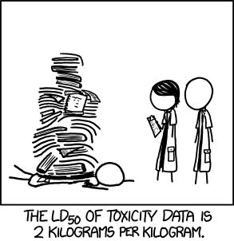

3.6 Bachelor Biochemie
“Na, was studierst du?”
“Biochemie in Bayreuth.”
“Wofür braucht man das?”
“Ja, das ist für ganz viele Sachen sehr wichtig.”
“Ah. Hört sich ja gut an! Wozu braucht man das denn genau?”
“Ähm, das wird eben überall gebraucht!”
Liebe werdende Biochemiker an der Universität Bayreuth: Sicher kennt ihr diesen kleinen Dialog oder habt zumindest schon selbst in der Lage gesteckt.
Die Großeltern wollen einfach wissen, was der Enkel macht und die Freunde erkundigen sich, wie es um einen selbst so steht. Damit solche Fragen nun besser beantwortet werden können, gibt es jetzt hier eine hoffentlich einleuchtende Einführung.
Biochemie bildet die Schnittstelle zwischen Chemie, Biologie und Medizin, dazu kommen noch die Aspekte der Genetik, Neurobiologie und der chemischen Vorgänge in Pflanzen und Umwelt. Durch diese Vernetzung ist die Biochemie sehr vielseitig, was es umso schwieriger macht, alles in allem auf den Punkt zu bringen. Ein Biochemiker kann von den komplexen Abläufen in einer Zelle über den Bau von Makromolekülen bis hin zur Bekämpfung von Krankheiten ein breites Spektrum an Kompetenzen abdecken.
Für welche Spezialisierung man sich diesbezüglich entscheidet, ist durchaus nicht immer einfach.😅 Neben der akademischen Forschung findet sich auch eine Reihe von interessanten Themengebiete wie:
- Molekularbiologe
- Pharmazie
- Humanbiologie
- Neurowissenschaften
- Genetik
- Pflanzenphysiologe
- Bioinformatik
- Mikrobiologie
- Lebensmittelchemie
- Bionik
- Agrarbiologie
- Immunbiologie
Besonders interessant sind hier auch gerade aktuelle Forschungsgebiete wie erneuerbare Energien oder Biopolymere.
Ein weiterer Vorteil ist, dass mit einem Master-Abschluss in Biochemie später auch ohne allzu großen Aufwand auf Lehramt Biologie und Chemie gewechselt werden kann. Jedoch sollte vorher ungefähr klar sein, ob es einem liegt, diese beiden schönen Fächer zu unterrichten.
Ähnlich wie in anderen naturwissenschaftlichen Disziplinen gilt jedoch auch in der Biochemie: Die Jobaussichten als Bachelor-Absolvent sind eher bescheiden. Für einen einigermaßen attraktiven Beruf sollte man also mindestens bis zum Master durchhalten.
Vielleicht kommt es euch noch nicht so vor, aber gerade ein Biochemiestudium bringt eine ganze Menge Arbeit mit sich. So sind die ersten beiden Semester von Biochemikern und Chemikern identisch. Hauptsächlich werden Grundlagen wie Mathematik, Physik, Anorganische Chemie, Organische Chemie und Physikalische Chemie gelehrt. Im zweiten Semester finden dann die ersten biologischen Vorlesungen, Zellbiologie und Biochemie, statt. Danach geht es richtig rund und das Studium entfernt sich weit von dem eines Chemikers. So kommen Genetik, Molekularbiologie sowie Botanik (# TODO Verweis auf Dschungel-ABC) dazu und es wird vertieft auf Zellbiologie und Biochemie eingegangen. Der Studiengang erhält nun seinen biochemischen Kern, was jedoch ein gesundes Bewusstsein für Lernen und Verantwortung voraussetzt.

Neben den Vorlesungen und den dazugehörigen Übungen gibt es noch diverse Praktika: Im Labor werden nach Anweisung Synthesen, Umlagerungen und andere interessante Sachen gemacht, was abermals umfangreiche Vor- und Nachbereitung bedarf. Ihr solltet auf keinen Fall unterschätzen, wie viel Eigeninitiative hier mitgebracht werden muss. Wer in den ersten beiden Semestern schläft und zu wenig lernt, dem wird es später fehlen. Dann ist es aber meistens schon zu spät, da die Zeit zu knapp ist, den Rückstand wieder aufzuholen.
Aber keine Panik! Erstens: Ihr seid ein großer “Haufen” und deshalb vergeht kein Jahr, in dem sich nicht gegenseitig geholfen wird und/oder Lerngruppen gebildet werden.
Zweitens: Ihr seid nie allein, was Fragen zum Studium betrifft, denn die Fachschaft steht euch immer mit Rat und Tat zur Seite. So findet ihr bei uns auch Laborausrüstung und Altklausuren zu euren Vorlesungen.
Zitat für Zwischendurch:
“Die Brünette wird mit einer 0,1M NaOH befüllt.”
Erstsemester im Praktikum
Eines ist auf jeden Fall sicher: Wer mit Spaß und Fleiß dabei ist, dem wird es in Bayreuth und hier auf dem Campus so richtig gut gehen, denn es gibt auch noch ein Leben außerhalb der Bib, was man auf keinen Fall zu kurz kommen lassen darf!☝️
💕Die Fachschaft BCG wünscht allen Biochemikern einen äußerst erfolgreichen Start in das Semester und wir hoffen, dass ihr genauso von der Uni begeistert sein werdet wie wir.💕